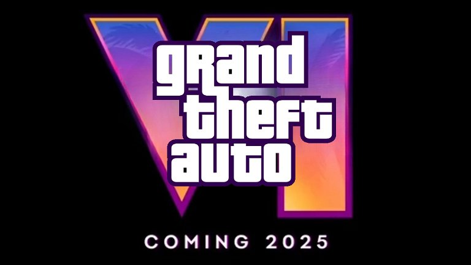

Rockstar publica el trailer de GTA VI

- El primer tráiler de GTA VI ya está aquí
- Debido a una filtracion, Rockstar se vio obligada a publicarlo antes de tiempo
- El juego llegará a PS5 y Xbox Series X|S en 2025
5 de diciembre de 2023
Grand Theft Auto VI pone rumbo al estado de Leonida, hogar de las calles rebosantes de neones de Vice City y sus alrededores, en la evolución más grande e inmersiva de la serie Grand Theft Auto hasta la fecha. Disponible en 2025 para PlayStation 5 y Xbox Series X|S.